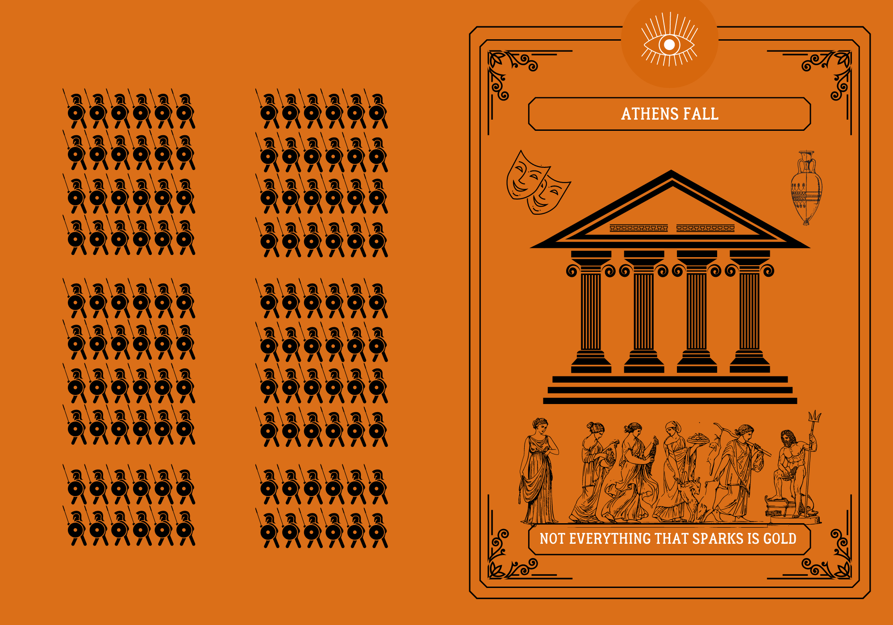
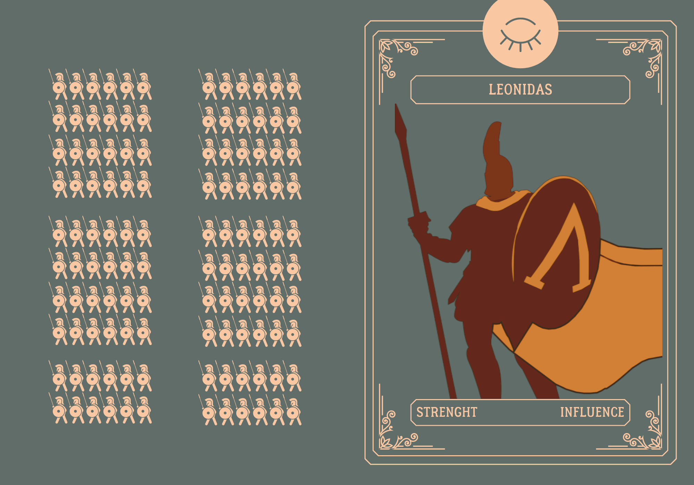
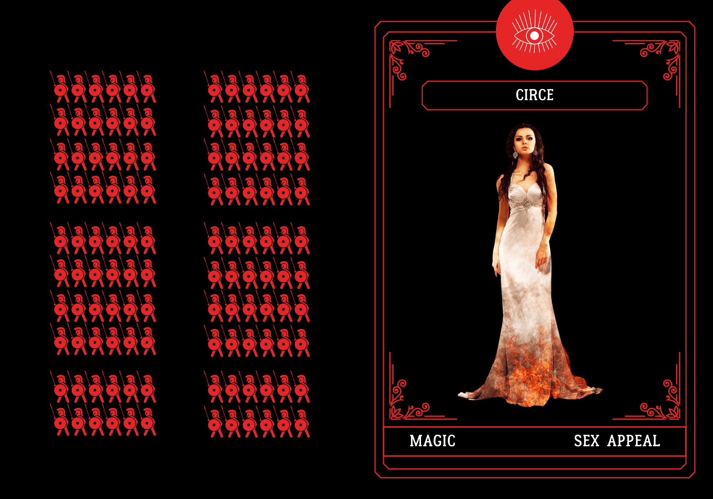
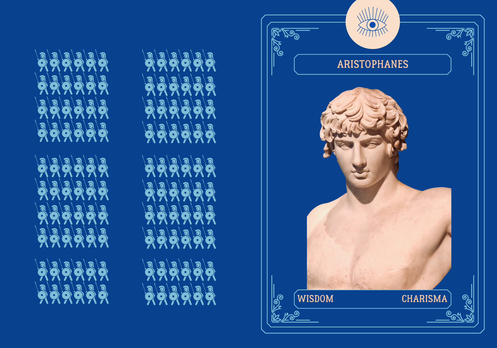

Summer Research Experience: Illinois Institute of Techology
June–August 2021
I was in charge of the graphic design for this project. I designed the logo, came up with the name for the escape room, and conducted
A/B testing designing two different versions of the flyers to promote the opening of the room to
the general public.
Escape Room Logo
Escape Room Flyer: Front
Escape Room Flyer: Back
Escape Room Credits
Athens Fall
Illinois Institute of Technology
Fall 2021
I developed a world and three player characters for a tabletop RPG.
**There are some historically inaccurate components to all the characters.
They do not resemble their homonymous historically-known counterparts,
except from some basic traits. All the characters’ background and main features
are anew and original**
Game Description:
The government of Athens has organized a group of
individuals tasked to find out who is plotting to betray the city of Athens in the
war against Sparta. If they can’t find out, the city will inevitably fall.
Gods, monsters, senators, scholars and military generals could be both their worst
enemies or best resources.
World:
The setting is Ancient Athens, in no precise historical time.

World Card
Fixed Player Character 1
Name: Leonidas
Character Archetype: Hero
Leonidas is a 40y.o. man who was previously a Spartan soldier. He ran away from
Sparta when he was 25, after falling in love with an Athenian woman named Irene. He is
currently one of the most trusted soldiers in the Athenian army, and a very influential
figure in Athen’s political system. Being knowledgeable about Sparta’s politics and
fighting strategies makes him Athen’s best asset against Sparta. It is extremely rare to
have a Spartan leave their home city—since the Spartan way of life is peculiar and aims
at developing a sense of dependence to the city itself—and for this reason Leonidas
gives Athenians information that would impossible to get without speaking to a person
who was born and raised in Sparta. Leonidas is a tall and muscular man with very few
hair. He always wears his fighting armor, and his shield is his most precious
possession: losing the shield signifies losing his honor to him, and a life without
honor is not worth living. Leonidas has been trained and raised in the Spartan
traditional style, therefore he’s all about war, strategy and fighting. He is the most
knowledgeable character with respect to fighting techniques and strength-related
abilities. However, Leonidas is very unpopular with Athens’ citizens because of his
Spartan origins. People will most likely not trust him and be rude to him, but Leonidas
is a very calm person who is accustomed to this treatment. His cold blood during war and
fight is balanced with his tempered attitude and his calm ways of communicating with
people. The reasons that lead him to leave Sparta also include that he was expecting a
daughter from Irene; female newborns are usually killed in Sparta, because they are not
adept at fighting and living in the Spartan style. Although he was not raised in Athens,
Leonidas is very respectful of Athen’s culture, and he has decided to raise his daughter
according to the city’s cultural norms. Leonidas’ weak spot is his daughter: he knows
she will be enslaved by the Spartans if Athens falls. She is his main reason for being
on this mission to prevent Athens from falling to Sparta.

As showed on his card, Leonidas can use his strength to
prevail in fights and perform physically daunting tasks, and his influence to get
information from authorities.
**I designed this card, and all the others present in this project
using free stock images and icons, and the web-based design tool Canva. This specific
card represents Leonidas, one of the three fixed player characters I designed. The right
half of the picture above represents the front of the card, whilst the left represents the back. This
character’s core attributes are strength and influence, and these two are reported on the
front of the card. The name of the character is reported on the top front of the card.
The closed eye icon represents Leonidas low-ability to connect with people on an
emotional level. Leonidas’ image portrays the peculiar characteristic of the
character: strenght and war-related skills. Leonidas’ facial traits are not evident on
this card because aesthetic specifications are not the focus of this character. Other
characters' cards all have fairly detailed facial traits, but Leonidas’ role in the game
is heavily reliant on his physical strenght rather than his looks and aesthetic appeal.
The back of this card (and every card from this set) consists of a Spartan army divided
in blocks; the soldiers are all represented with the same icon, as the Spartan
upbringing was very little concerned with developing an identity rather than improving
from a tactical war-related perspective. This card is peculiar, I would say, because
Leonidas looks a lot like the soldiers in the background (intentionally, given this
character’s background). The back of the card is a reminder of the threat the game
revolves around, and what the chosen player character is fighting for.
Fixed Player Character 2
Name: Circe
Character Archetype: Shapeshifter
Circe is a very famous magician in Athens. She inhabits the heart of the forest
surrounding Athens. The forest confines with Spartan territory, and she has previously
encountered Spartans who try to get to Athens from the forest, attempting to not be
seen. Circe is apparently evil. She appears as an attractive woman in her early 30s, but
she is actually 100 years old. She is short and curvy, she has long red hair and green
eyes. She is known to be very persuasive with males. She is powerful, and extremely
self-confident. Her beauty is her greatest strength. In Athens most males loves her, and
most women fear her. For this reason citizens are usually willing to talk to her, to be
benevolent towards her and to offer her gifts and precious information in exchange for
small favors involving her magical powers. However, Circe is not a good communicator or
a patient person at all. She doesn’t follow the law, and she is not involved in the
political scene. She claims she has never been in love, though she is known to have held
captive several men that she "particularly liked". It is not clear whether the men
escaped or she murdered them at some point. Her weak spot is feelings: she is the desire
of many and the need of none. She is very soft at heart, though she portrays herself as
a strong and independent woman. She has no time for relationships and fears to share her
influence with anyone else. She has been with both men and women, and she is a person
who is very comfortable with sexual activity and promiscuity. Circe’s main ability is
that to use magic to get in people’s minds. However, she is also very knowledgeable
about herbs and medical treatments, as she has lived in the forest for a long time. The
herbs in the forest can be both used with curative and destructive aims. Circe will not
hesitate to use the wrong herbs on someone she doesn’t trust. Circe doesn’t like
fighting and violence in general. She is a manipulator, and she will use her sex appeal
to navigate obstacles. She doesn’t rely on communication or violence. Her reason to be
on this mission to save Athens is to protect her home in the forest. The Spartans are
known to be skeptical about magicians and divinity in general, so Circe knows they would
destroy the forest and banish her from Athens if the city should fall.

As showed on her card, Circe can use her Magic to
inflict damage or heal other characters/creatures and Sex Appeal to persuade
most people.
Fixed Player Character 3
Name: Aristophanes
Character Archetype: Trickster
Aristophanes is a comedian. He is not an extremely popular figure in Athens, but he
is respected as an artist. He is a very fun and inappropriate person. The thermal baths
are his favorite place to be. He is an Athenian young man in his mid 20s. He is
polyamorous. He never goes around without at least two of his lovers by his side. He
lives a very active life, from which he takes inspiration for his art. Aristophanes has
a very good relationship with citizens, he is an extrovert and a good communicator. He
is also respected by the politicians in Athens who enjoy his art. His comedies are very
much inspired by nature, and he is very sensitive with respect to animals and all living
things. Aristophanes enjoys the simple things in life, and he is a transparent person
who speaks his mind at all times. He doesn’t know much about fighting and war, and he is
not physically apt to strength-related quests. He is a tall, skinny boy, with light
brown hair and blue eyes. He wears very elaborate long dresses and golden accessories.
His weak spot is deep conversations: being a very light person, Aristophanes hates
seriousness and will avoid conversations that go beyond his apparent superficiality. He
also hates to plan and think strategically, and he lives by his instincts as much as
possible. His strongest fear is to get so caught up by the ordinary things in life that
he will lose his inspiration for his comedies. Aristophanes is an extremely social
individual, and he can’t be alone. He is not very self-confident, but his role as an
artist succeeds in giving him a certain authority that draws people to him. He is not a
particularly attractive man, but his many lovers enjoy his poignant sarcasm and his
straightforward way of communicating. Despite how he portrays himself, Aristophanes is a
very wise individual. He attended the best gymnasium (school) in Athens. He personally
knows many famous scholars, and thanks to his erudition he knows a big deal about the
cultural nuances of Athens. Aristophanes claims that he lives like art, and he is on
this mission to save Athens because he believes it is the only city where he can live
his desired life. He knows the Spartan lifestyle wouldn’t suit him, and he doesn’t want
to leave his hometown (Athens). Moreover, Spartans don’t appreciate the arts and they
despise artists, as they believe the only thing that makes a man worthy is war.

As showed on his card, Aristophanes can use his wisdom
to solve issues, figure out the best course of action and charisma to get
information from people.